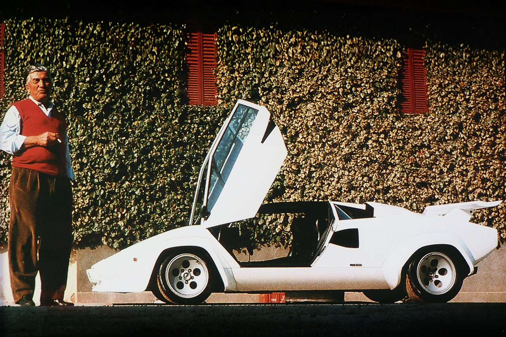
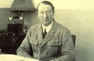
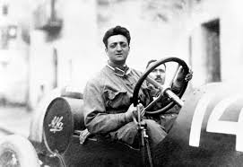

 Ferruccio Lamborghini was born in Italy in 1916. He was fascinated with engines from an early age. During World War II he joined the army and was stationed on the island of Rhodes. Fortunately there was little going on there during the war. The island was essentially isolated from the rest of the world. Any cars, trucks or motorcycles that broke down had to be repaired on the spot with reused parts. Lamborghini became known as a wizard at mechanical improvisation and became very much in demand at fixing engines.
 Founder Ettore Bugatti was born in Milan, Italy, and the automobile company that bears his name was founded in 1909 in Molsheim located in the Alsace region which was part of the German Empire from 1871 to 1919. The company was known both for the level of detail of its engineering in its automobiles, and for the artistic manner in which the designs were executed, given the artistic nature of Ettore's family (his father, Carlo Bugatti (1856–1940), was an important Art Nouveau furniture and jewelry designer).
 Ferrari is an Italian company which has produced sports cars since 1947, but traces its roots back to 1929 when Enzo Ferrari formed the Scuderia Ferrari racing team.Unlike many similar yet independent companies, Fiat Group-owned Ferrari continued to thrive after the death of its charismatic founder and is today one of the most successful sports car companies in the world. In January 2016, Ferrari officially split off from its former parent company Fiat Chrysler Automobiles.